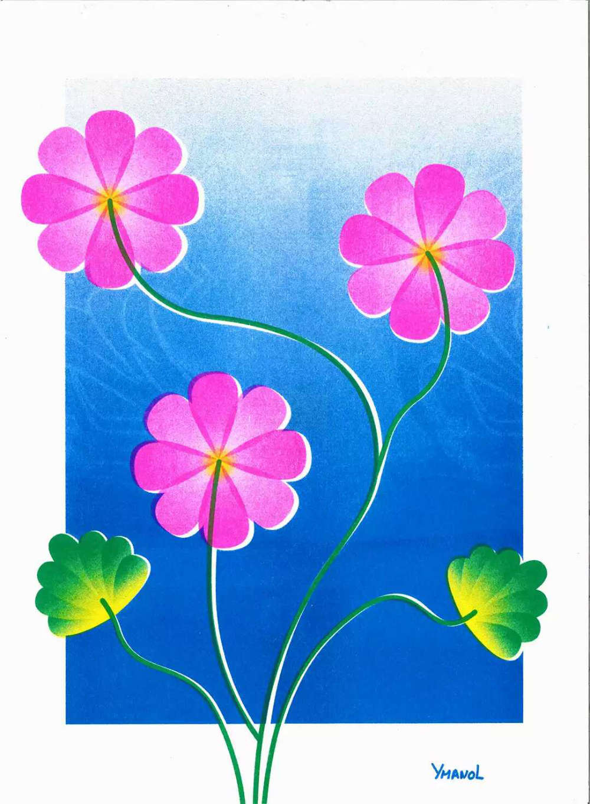
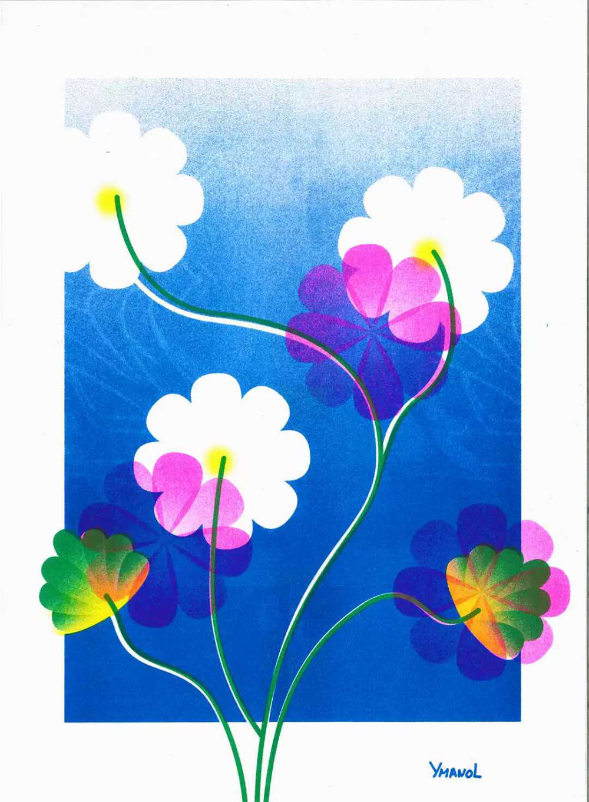
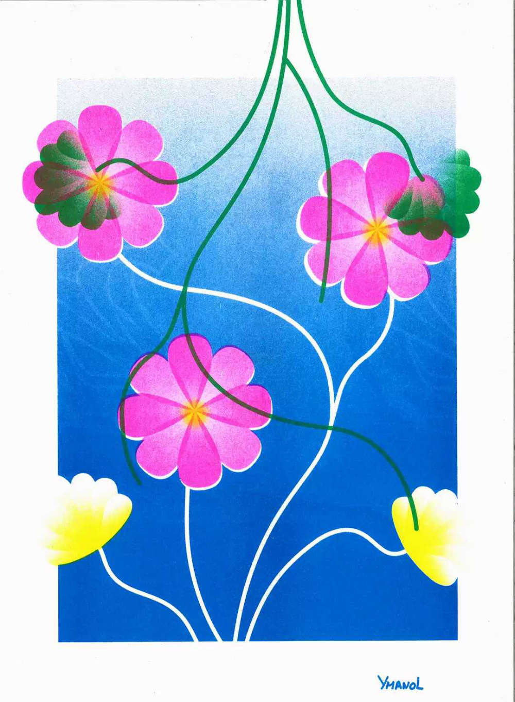
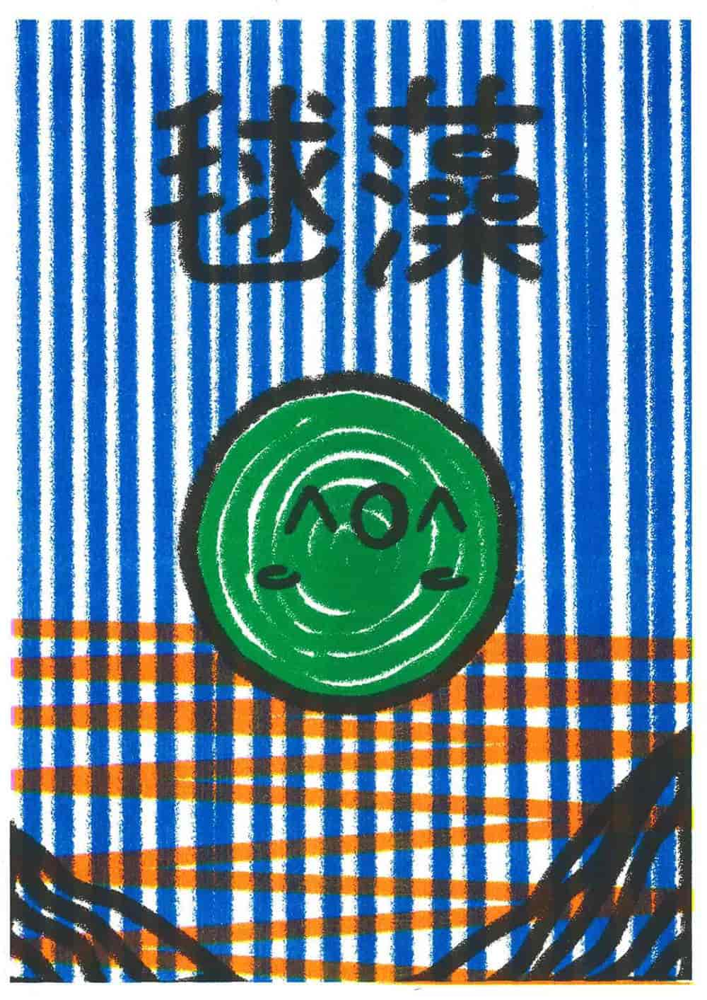
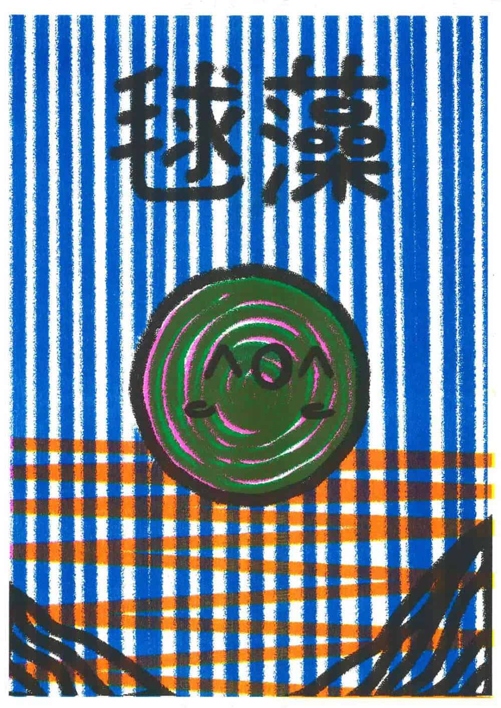
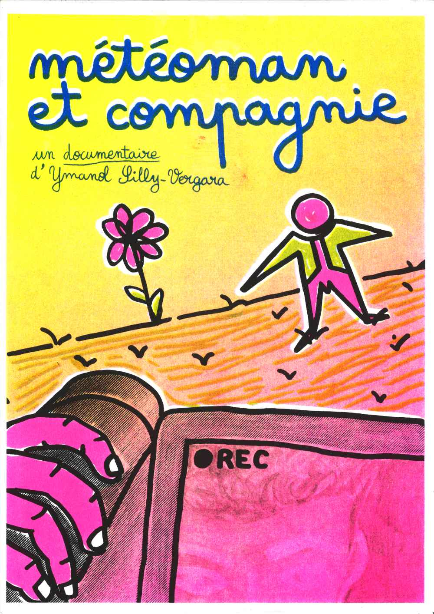
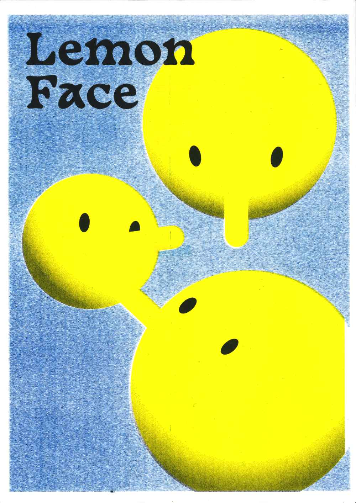
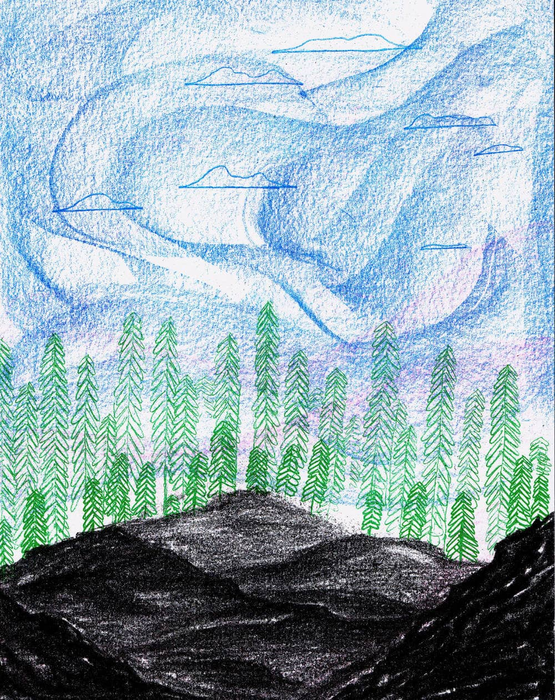

RISOGRAPHIE
Une sélection d’impression en risographie. Elles sont scannées suite à leur impression.








Une sélection d’impression en risographie. Elles sont scannées suite à leur impression.







